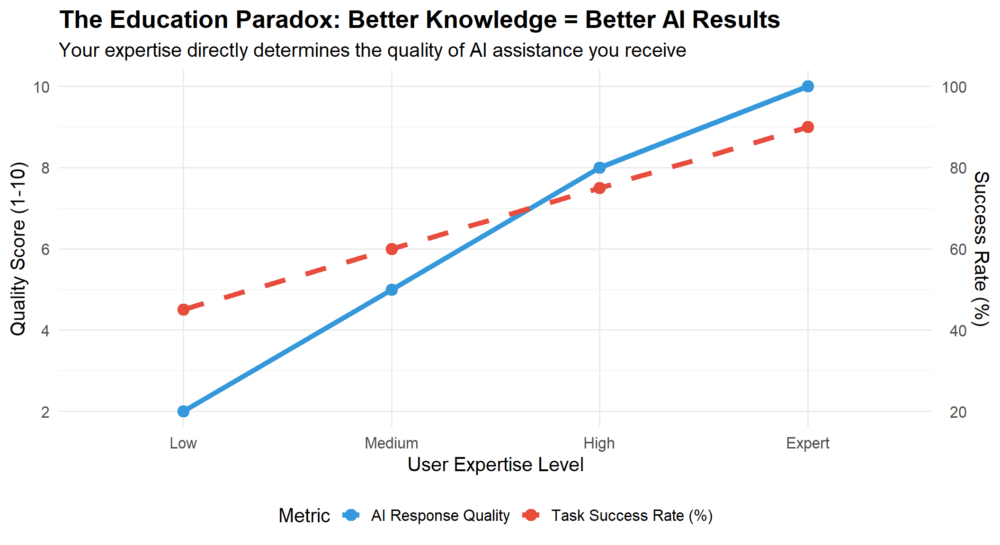
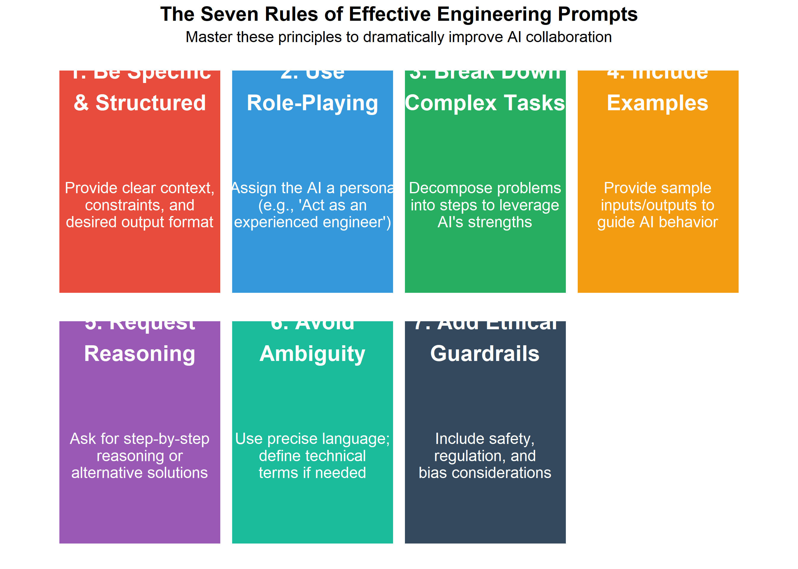
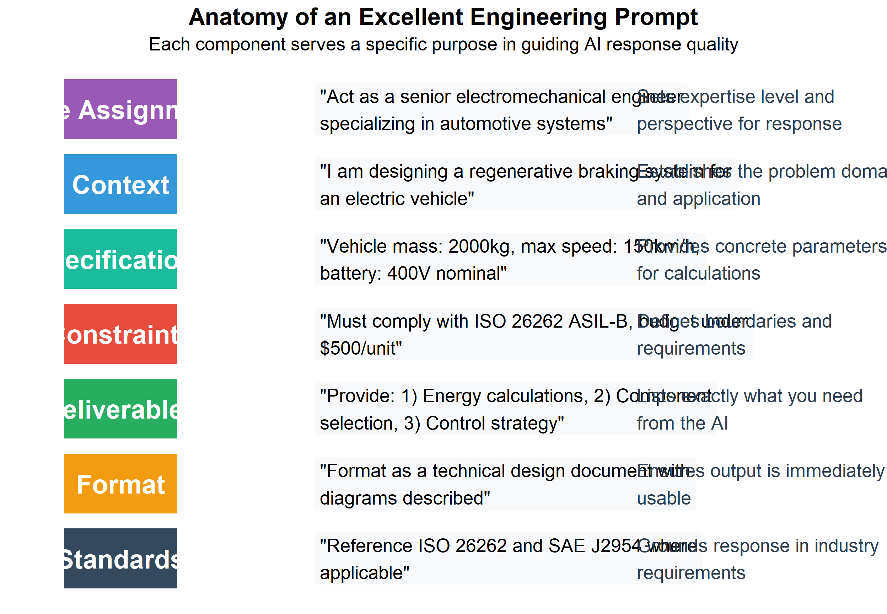
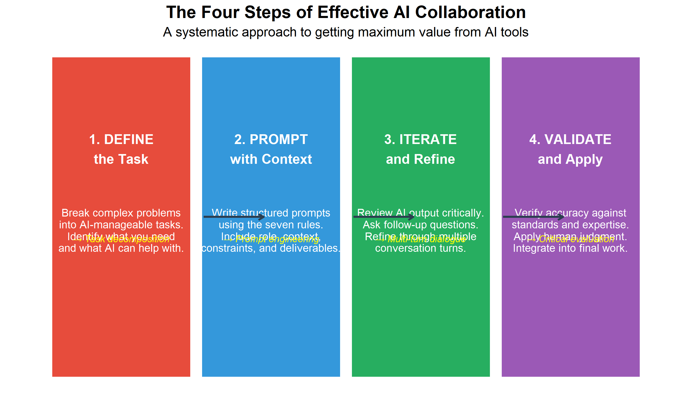
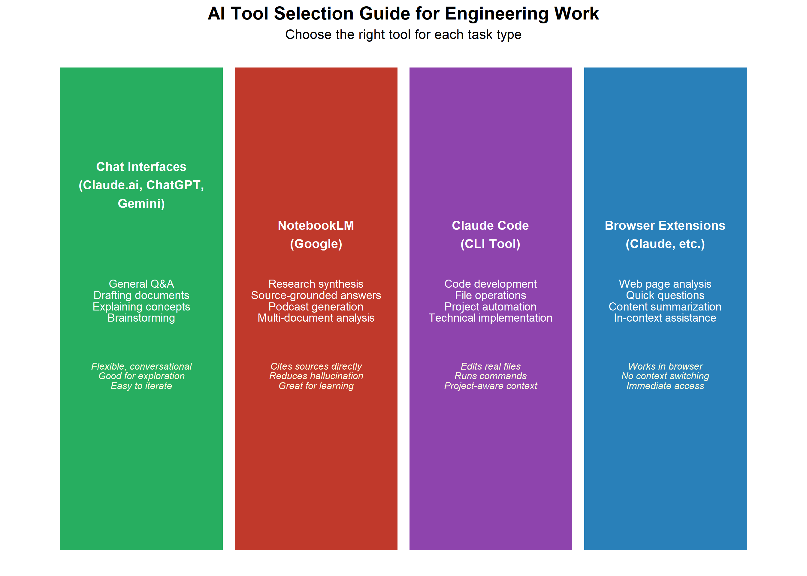
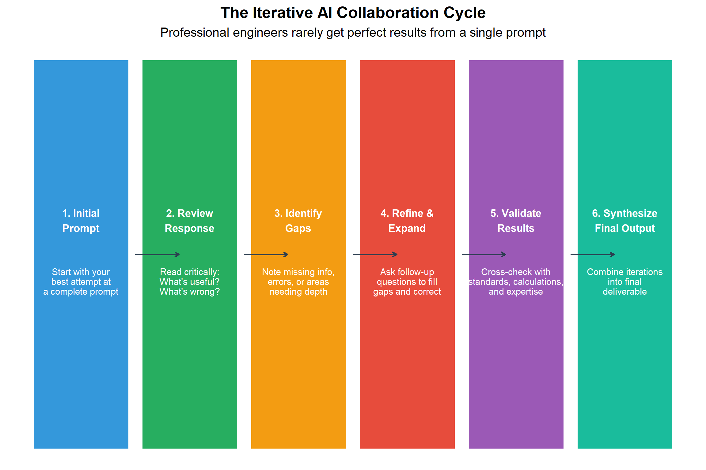
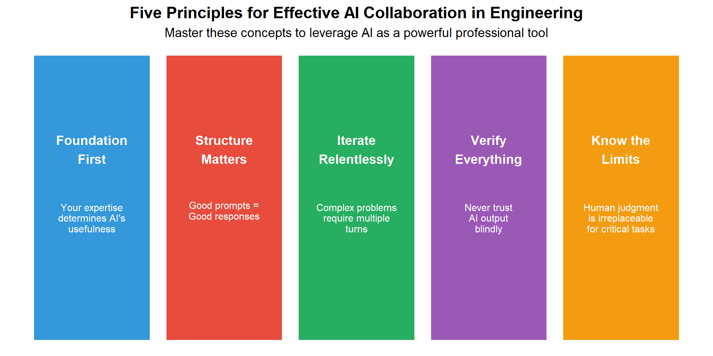

17 Working Effectively with AI
17.1 Learning Objectives
After completing this chapter, you will be able to:
- Understand AI’s role in modern engineering work and its limitations
- Apply the four steps of effective AI use: Define, Prompt, Iterate, Validate
- Apply prompt engineering principles to get better AI responses
- Distinguish between poor, adequate, and excellent prompts
- Select appropriate AI tools for different tasks (chat interfaces, NotebookLM, Claude Code, browser extensions)
- Use iterative AI collaboration to solve complex engineering problems
- Critically evaluate AI-generated content for accuracy and safety
- Identify tasks suited for AI assistance versus human expertise
- Apply ethical considerations when using AI in engineering contexts
17.2 Introduction: AI in the Modern Workplace
Artificial Intelligence has fundamentally changed how engineering work is performed. According to research, AI is predominantly used for coding and technical work (34% of professional use), with complex tasks showing potential 12x speedups compared to traditional methods.
However, there’s a critical paradox: more complex tasks have lower success rates (61-66% versus 70% for simpler tasks). This means engineers must develop skills to effectively collaborate with AI, not just delegate to it.
17.2.1 The Education Paradox
Key Insight: There is a nearly perfect correlation between prompt sophistication and response quality. You need strong foundational knowledge to get quality AI assistance. “AI will do it for me” is a trap.
Discussion: Why does expertise improve AI results?
The “education paradox” reveals a fundamental truth about AI collaboration:
- Better questions lead to better answers: Experts know what to ask and how to frame problems
- Domain knowledge enables validation: You can only verify AI output if you understand the domain
- Iterative refinement requires expertise: Knowing when to push back or ask follow-up questions
- Critical evaluation is essential: AI can sound confident while being wrong
Think about it: If you don’t understand the fundamentals of motor selection, how would you know if an AI recommendation is correct or dangerously undersized?
17.2.2 AI Impact by Industry
| Industry | Common AI Applications | Potential Speedup | Success Rate | Human Oversight Needed |
|---|---|---|---|---|
| Automotive | Simulation modeling, control systems, predictive maintenance | 10-12x | 62% | Critical |
| Food Processing | Process optimization, quality control, equipment diagnostics | 8-10x | 68% | High |
| Defense | System design, modeling, compliance documentation | 10-12x | 61% | Critical |
| Mining | Equipment diagnostics, predictive maintenance, safety analysis | 8-10x | 65% | High |
| General Manufacturing | Documentation, troubleshooting guides, process analysis | 6-8x | 70% | Moderate |
Why do automotive and defense require “Critical” human oversight?
Safety-critical applications require mandatory human validation because:
- Regulatory requirements: ISO 26262 (automotive) and MIL-STDs (defense) require documented human review
- Liability: Engineers are legally responsible for designs, not AI tools
- Failure consequences: Errors can cause injury, death, or mission failure
- AI limitations: Current AI cannot reliably reason about edge cases and failure modes
- Standards compliance: AI cannot certify compliance with safety standards
Best practice: Use AI for initial research and drafting, but always validate with human experts and formal analysis methods (FMEA, FTA, HAZOP).
17.3 Prompt Engineering Fundamentals
Prompt engineering is the skill of crafting inputs to AI systems that produce useful, accurate, and relevant outputs. In engineering contexts, this skill is becoming as important as technical writing.
Before you read: What makes a good question?
Think about the difference between these two questions:
- “Can you help me with my motor problem?”
- “I have a 3-phase 460V 50HP motor that trips its overload after 15 minutes of running. Ambient temperature is 35°C. What diagnostic steps should I follow?”
Which question would get better help from a human expert? The same principle applies to AI. Before reading about prompt engineering, consider what information you would need to give a colleague to get useful help.
17.3.1 The Seven Rules of Effective Prompts

17.4 Prompt Quality Comparison: Bad, Medium, and Good
The following examples demonstrate the dramatic difference that prompt quality makes. Each example shows the same task approached three ways.
17.4.1 Example 1: Motor Selection
| Quality Level | Prompt | Expected AI Response |
|---|---|---|
| Bad | Help me pick a motor. | Generic motor types list with no specific guidance. AI cannot determine application, size, or requirements. |
| Medium | I need to select a motor for a conveyor system. The conveyor moves boxes that weigh up to 50kg. What motor should I use? | Basic motor power estimate, general motor types suggested, but missing: duty cycle, environment, power supply, efficiency requirements, safety factors. |
| Good | Act as a senior electromechanical engineer. I need to select an AC induction motor for a conveyor belt system with the following specifications:\n- Load: cardboard boxes up to 50kg each\n- Belt speed: 0.5 m/s\n- Belt length: 10m, width: 0.6m\n- Incline: 5 degrees\n- Operating environment: food processing plant (IP65 required)\n- Power supply: 480V 3-phase\n\nPlease provide:\n1. Required torque calculation\n2. Motor power recommendation with 25% safety factor\n3. Recommended motor specifications (frame size, efficiency class)\n4. Three specific motor models from major manufacturers\n5. Mounting considerations\n\nFormat as a technical memo with calculations shown. | Complete technical analysis with calculated torque (~85 Nm), motor sizing (1.5-2.2 kW), specific model recommendations (e.g., ABB M3BP, Siemens 1LE1), IP65-rated food-safe options, and mounting specifications. |
17.4.2 Example 2: Troubleshooting a PLC System
| Quality Level | Prompt | Why This Works (or Doesn't) |
|---|---|---|
| Bad | My PLC isn't working. Fix it. | No context: What PLC? What's the symptom? What have you tried? AI will give generic advice that wastes time. |
| Medium | I have an Allen-Bradley PLC that's showing a fault. The output for a motor starter isn't turning on even though the program shows it should be. What could be wrong? | Better: Identifies equipment and basic symptom. Missing: specific I/O addresses, what's been checked, system configuration, urgency. |
| Good | Act as an experienced automation technician troubleshooting a control system issue.\n\nSystem: Allen-Bradley CompactLogix L33ER\nProblem: Output O:2/5 (motor starter for pump P-101) fails to energize\n\nObservations:\n- Rung logic in RSLogix shows OTE instruction is TRUE\n- Output status LED on I/O module is OFF\n- Motor starter coil tests good (24VDC, 85 ohms)\n- Other outputs on same module work correctly\n- Problem started after yesterday's power outage\n\nPlease provide:\n1. Systematic troubleshooting steps in order of likelihood\n2. How to test each potential failure point\n3. Safety precautions for each test\n4. Possible root causes ranked by probability\n5. Preventive measures to avoid recurrence\n\nFormat as a troubleshooting checklist I can use in the field. | Excellent: Provides complete context, specific observations, clear deliverables, and practical output format. Enables targeted, actionable response. |
17.4.3 Example 3: Safety Analysis
| Quality Level | Prompt | Risk Assessment |
|---|---|---|
| Bad | Is this machine safe? | DANGEROUS: Vague prompts about safety can lead to incomplete analysis and missed hazards. Never acceptable for safety-critical work. |
| Medium | I have a robotic welding cell. What safety features does it need? | INADEQUATE: Will get generic safety device list but miss application-specific hazards, risk levels, and compliance requirements. |
| Good | Act as a certified machine safety engineer (TUV or equivalent).\n\nI need to perform a risk assessment for a new robotic welding cell with the following configuration:\n- Robot: FANUC ArcMate 100iD, 12kg payload\n- Process: MIG welding, automotive brackets\n- Cell size: 4m x 4m\n- Operator tasks: Load/unload parts every 45 seconds\n- Adjacent to manual assembly line (2m clearance)\n\nPlease provide:\n1. Hazard identification using ISO 12100 categories\n2. Risk assessment matrix for top 5 hazards\n3. Required safeguarding per OSHA and ISO 10218-2\n4. Recommended safety system architecture\n5. Validation testing requirements\n\nReference applicable standards (ISO, ANSI/RIA, CSA) for each recommendation. | APPROPRIATE: Enables comprehensive, standards-based response. Still requires human expert validation before implementation. |
Warning: For safety-critical applications, AI should NEVER be the final authority. Always validate AI-generated safety analyses with certified professionals and applicable standards.
17.5 Anatomy of an Excellent Engineering Prompt
Let’s break down the components of a well-structured prompt:

17.6 Interactive Exercise: Rate These Prompts
For each prompt below, identify what’s missing and how you would improve it.
17.6.1 Exercise 1: Pump Selection
Original Prompt: “What pump should I use for water?”
| Missing Element | Why It's Important |
|---|---|
| Flow rate requirement | Cannot size pump without knowing GPM or L/min needed |
| Head/pressure requirement | Total dynamic head determines pump curve selection |
| Fluid properties | Temperature, viscosity, solids content affect pump type |
| Operating environment | Indoor/outdoor, hazardous area, food-grade requirements |
| Power supply | Single/three phase, voltage determines motor options |
| Budget/efficiency goals | Premium efficiency vs. standard, capital vs. operating cost |
Your Task: Rewrite this prompt to include all necessary information for a food processing application pumping tomato paste at 80°C.
17.6.2 Exercise 2: Identify the Quality Level
Rate each prompt as Bad, Medium, or Good and justify your rating:
| # | Prompt | Your Rating (B/M/G) | Justification |
|---|---|---|---|
| 1 | How do I wire a motor? | ________ | ________ |
| 2 | Explain the difference between VFD and soft starter for a 50HP motor application in a cement plant with high dust. | ________ | ________ |
| 3 | Write code for Arduino. | ________ | ________ |
| 4 | Design a sensor network for predictive maintenance on a CNC machine. Include vibration, temperature, and current sensors with sampling rates and communication protocol recommendations. | ________ | ________ |
| 5 | Help with my project. | ________ | ________ |
17.7 The Four Steps of Effective AI Use
The research shows that effectively working with AI follows a consistent four-step process. Master these steps to maximize the value of AI collaboration.
Warning: Using `size` aesthetic for lines was deprecated in ggplot2 3.4.0.
ℹ Please use `linewidth` instead.
17.7.1 Step 1: Define the Task
Before engaging with AI, clearly define what you need:
- What is the end goal? A calculation, a design, troubleshooting guidance?
- What constraints apply? Budget, standards, materials, timeline?
- What do you already know? Your expertise shapes the conversation
- Can AI actually help with this? Some tasks require physical inspection or human judgment
Key Insight: The better you understand the problem, the better AI can help. Vague understanding leads to vague prompts and useless responses.
17.7.2 Step 2: Prompt with Context
Apply the seven rules of effective prompting:
- Assign a role to establish expertise level
- Provide complete context and background
- Specify constraints and requirements
- List clear deliverables
- Request step-by-step reasoning
- Define the output format
- Include relevant standards
17.7.3 Step 3: Iterate and Refine
Rarely is the first response perfect. Plan for 3-6 turns of conversation:
- Review critically: What’s useful? What’s missing? What’s wrong?
- Ask targeted follow-up questions
- Request expansions on specific areas
- Challenge assumptions and ask for alternatives
17.7.4 Step 4: Validate and Apply
AI output is a starting point, not a final answer:
- Verify calculations and units
- Cross-check against standards and codes
- Apply your engineering judgment
- Document what came from AI assistance
- Take responsibility for the final work product
Case Study: When validation caught an AI error
Scenario: An engineering student used AI to calculate the required conveyor belt width for a food processing line handling 500 kg/hr of bulk product.
AI Response: Recommended a 300mm belt based on throughput calculations.
Validation Issue: The AI correctly calculated volumetric flow but failed to consider: - Minimum belt width for the discharge chute (400mm required) - Product spread factor for irregular materials - Safety factor for surge capacity
Actual Requirement: 500mm belt per facility standards.
Lesson: AI calculations may be mathematically correct but miss practical engineering constraints. Always validate against physical requirements, codes, and site-specific standards.
Discussion: When should you NOT use AI?
AI is not appropriate when:
- Physical inspection is required: AI cannot see, touch, or measure actual equipment
- Real-time safety decisions: Lockout/tagout procedures, emergency response
- Legal certification: Stamping drawings, signing off on safety assessments
- Novel situations: First-of-a-kind designs with no training data
- Classified/proprietary work: Confidential designs should not be uploaded
Rule of thumb: If a human expert would need to be physically present, AI cannot substitute.
17.8 AI Tools and Their Use Cases
Different AI tools serve different purposes. Understanding when to use each tool maximizes productivity.

17.8.1 Chat Interfaces (Claude.ai, ChatGPT, Gemini)
Web-based conversational AI platforms are the most versatile starting point for AI collaboration.
| Use Case | Description | Example Prompt |
|---|---|---|
| Technical Explanations | Explain complex concepts, standards, or technical principles in accessible terms | 'Explain the difference between ASIL levels in ISO 26262 for automotive safety' |
| Document Drafting | Draft reports, specifications, procedures, or technical memos | 'Draft a preventive maintenance procedure for a hydraulic press' |
| Calculation Verification | Double-check hand calculations; request step-by-step solutions | 'Verify my torque calculation: 50kg load, 0.3m arm, need Nm result' |
| Brainstorming Solutions | Generate alternative approaches to engineering problems | 'What are three approaches to detect bearing wear before failure?' |
| Code Generation | Write PLC ladder logic concepts, Python scripts, or MATLAB code | 'Write Python code to calculate conveyor belt speed from encoder pulses' |
| Standard Interpretation | Interpret requirements from ISO, OSHA, NEC, or other standards | 'What does NFPA 70E require for arc flash labeling on electrical panels?' |
Best Practices for Chat Interfaces:
- Start new conversations for new topics (avoid context pollution)
- Use the “regenerate” feature to see alternative responses
- Upload images of diagrams, schematics, or equipment for visual analysis
- Copy important responses to notes (conversations can be lost)
17.8.2 NotebookLM (Google)
NotebookLM is specifically designed for source-grounded research. Upload documents, and the AI answers questions based only on your sources.
| Feature | Description | Engineering Application |
|---|---|---|
| Source-Based Answers | Answers come directly from your uploaded documents, reducing hallucination | Upload equipment manuals and ask specific troubleshooting questions |
| Citation Links | Every answer includes clickable citations to the exact source passage | Verify AI claims against original standards documents |
| Audio Overview | Generates AI podcast-style audio summaries of your documents for learning | Listen to safety standard summaries during commute or shop floor time |
| Multi-Document Synthesis | Combines information from multiple PDFs, websites, or text files | Compare multiple vendor datasheets or competing standards |
| Note Generation | Creates structured notes and summaries from source materials | Generate study guides from technical documentation |
Example NotebookLM Workflow:
- Upload: ISO 12100, ISO 13849-1, equipment manual PDF
- Ask: “What risk assessment steps does ISO 12100 require?”
- Review: AI provides answer with direct citations to document sections
- Generate: Create an audio overview to reinforce learning
When to Use NotebookLM: When you need answers grounded in specific documents rather than general AI knowledge. Ideal for standards compliance, equipment documentation, and research synthesis.
17.8.3 Claude Code (Command Line Tool)
Claude Code is a terminal-based AI assistant that can read, write, and execute code in your actual project environment.
| Capability | Description | Example |
|---|---|---|
| File Operations | Read, write, and edit files directly in your project | Edit src/motor_control.py to add speed ramping |
| Code Development | Generate, refactor, and debug code with full context | Write a Python script to parse PLC data logs |
| Command Execution | Run build commands, tests, and system tools | Run pytest and fix any failing tests |
| Project Context | Understands your entire codebase structure | Find all files that reference the 'Pump' class |
| Git Integration | Create commits, branches, and pull requests | Commit changes with descriptive message |
Engineering Applications:
- PLC Code Analysis: Review and understand legacy ladder logic or structured text
- Data Processing: Create scripts to analyze production data, SPC charts, or sensor logs
- Documentation Generation: Auto-generate code documentation or API references
- Test Automation: Write unit tests for engineering calculations
Example Session:
> claude "Analyze the motor_control.py file and suggest improvements for
handling encoder signal noise"
Claude Code reads the file, understands the context, and provides specific
recommendations with code changes that can be applied directly.17.8.4 Browser Extensions (Claude Extension, etc.)
Browser extensions provide instant AI assistance without leaving your current workflow.
| Use Case | How It Helps | Example |
|---|---|---|
| Webpage Summarization | Summarize long technical articles or datasheets instantly | On a 20-page motor datasheet: 'What is the rated torque at 1750 RPM?' |
| Technical Documentation | Ask questions about the documentation page you're reading | On Allen-Bradley KB: 'How do I configure this fault code?' |
| Email Composition | Draft professional responses to technical inquiries | 'Help me respond professionally to this RFQ' |
| Research Assistance | Explain unfamiliar terms or concepts on any webpage | Highlight text: 'Explain MTBF in practical terms' |
| Quick Calculations | Get quick engineering calculations without switching apps | 'Convert 150 lb-ft to Nm' |
Best Practices:
- Use for quick queries and summaries
- For complex problems, move to a full chat interface
- Be cautious with confidential information on web pages
- Extensions work best for reading comprehension tasks
17.8.5 Choosing the Right Tool
| Situation | Best Tool | Why |
|---|---|---|
| Need to understand a technical concept | Chat Interface | Flexible conversation, can explore related topics |
| Writing code for a project | Claude Code | Can directly modify files and run tests |
| Researching from specific documents | NotebookLM | Answers grounded in your source documents |
| Quick question about a webpage | Browser Extension | No context switching, immediate assistance |
| Drafting technical documentation | Chat Interface | Good at structured document generation |
| Analyzing production data | Claude Code | Can write and execute analysis scripts |
| Learning new standards | NotebookLM (with audio) | Audio overviews for passive learning |
17.9 The Iterative Approach: Multi-Turn AI Collaboration
Complex engineering problems are rarely solved in a single prompt. The iterative approach mirrors how you would work with a human expert.
17.9.1 The Iteration Cycle

17.9.2 Worked Example: Designing a Conveyor Control System
Turn 1 - Initial Prompt:
Act as an automation engineer. Design a basic control system for a
conveyor belt in a packaging line. The conveyor is 15m long and
transports boxes to a palletizing station.AI Response Summary: Generic overview with basic motor control, start/stop logic, and simple sensors.
Turn 2 - Adding Specificity:
Good start. Now expand with these details:
- Add accumulation zones (3 zones, 5m each) with photo-eye sensors
- Include a reject station at the 10m mark for overweight boxes
- Integrate with an upstream case sealer (need handshake signals)
- Use Allen-Bradley CompactLogix as the controller
Show the I/O list and basic ladder logic structure.AI Response Summary: Detailed I/O list, zone control logic, sensor placement, and communication requirements.
Turn 3 - Safety and Edge Cases:
Now address:
1. What happens if the downstream palletizer faults?
2. Add E-stop integration per ISO 13849 PLd requirements
3. How do we handle box jams in each zone?
4. What's the startup sequence after E-stop reset?
Include safety relay wiring diagram description.AI Response Summary: Complete safety integration, fault handling, jam detection, and recovery procedures.
Turn 4 - Final Validation:
Review your complete design and:
1. List any assumptions you made that I should verify
2. Identify potential failure modes you haven't addressed
3. What information would you need to finalize this for implementation?
4. Are there any code standards (ISA, IEC) I should reference?AI Response Summary: Comprehensive assumption list, remaining questions, and standards references for documentation.
Key Point: This four-turn conversation produced a design that would have required a much longer single prompt to achieve, and the iterative approach allowed for course correction along the way.
Try it yourself: Practice iterative prompting
Your Challenge: Use the four-turn approach to design a temperature monitoring system for a food processing facility.
Turn 1: Define the basic requirements (number of zones, temperature ranges, alerting needs)
Turn 2: Add specifics (sensor types, communication protocol, integration with existing systems)
Turn 3: Address failure modes and safety (what happens if a sensor fails? How are critical temperature excursions handled?)
Turn 4: Request validation questions and identify what you need to verify before implementation
Compare your results: Did the iterative approach give you a more complete design than your initial prompt would have?
17.10 Practice Topics for Iterative AI Sessions
Use these topics to practice the iterative approach. Each topic is designed to require multiple turns to fully develop.
17.10.1 Beginner Level
| Topic | Iteration Hint | Expected Turns |
|---|---|---|
| Motor Starter Selection | Start with application, then add environment, protection requirements, control method | 2-3 |
| Sensor Selection for Proximity Detection | Begin with what you're detecting, then material, distance, environment, output type | 2-3 |
| Basic PLC Program for Traffic Light | Define sequence first, then timing, then inputs/outputs, then safety | 3-4 |
| Belt Conveyor Speed Calculation | Start with throughput requirement, then add physical constraints | 2-3 |
17.10.2 Intermediate Level
| Topic | Iteration Hint | Expected Turns |
|---|---|---|
| VFD Parameter Setup for Pump Application | Define motor and load first, then control requirements, then protection settings | 3-4 |
| PFMEA for Automated Assembly Station | Describe process steps, then potential failures, then iterate on severity/occurrence ratings | 4-5 |
| Pneumatic Circuit Design with Safety | Start with actuator requirements, then add safety, then valve selection, then circuit | 3-4 |
| HMI Screen Layout for Batch Process | Define operator tasks first, then alarms, then navigation, then data display | 3-4 |
17.10.3 Advanced Level
| Topic | Iteration Hint | Expected Turns |
|---|---|---|
| Predictive Maintenance System Architecture | Define assets and failure modes, then sensors, then data architecture, then analytics approach | 5-6 |
| Robot Cell Integration with Vision System | Robot selection first, then vision requirements, then communication, then programming approach | 5-6 |
| Energy Management System for Manufacturing Plant | Start with loads and usage patterns, then monitoring points, then control strategy, then ROI | 4-5 |
| Complete Machine Safety Assessment | Describe machine function, then hazards, then risk assessment, then safeguarding, then validation | 5-6 |
17.11 Critical Evaluation of AI Outputs
AI can produce confident-sounding responses that are completely wrong. Engineers must develop critical evaluation skills.
17.11.1 Red Flags in AI Responses
| Red Flag | Example | Your Response |
|---|---|---|
| Calculations Without Units | "The motor needs 150" - 150 what? HP? kW? Nm? | Always request calculations with units shown; verify dimensional analysis |
| Missing Safety Considerations | Design has no E-stop, no guarding discussion, no lockout provisions | Explicitly ask for safety analysis; cross-reference with standards |
| Outdated Standards Referenced | References NEC 2014 when 2023 is current; cites withdrawn ISO standards | Verify all standard references; check publication dates |
| Overconfident Language | "This will definitely work" or "This is the only solution" | Be skeptical; request alternatives and trade-offs |
| Generic Without Specifics | "Use appropriate sensors" without specifying type, range, or model | Push for specific part numbers, ranges, and specifications |
| Ignoring Stated Constraints | You specified 24VDC and AI designs for 120VAC | Re-state constraints clearly; verify compliance in response |
17.11.2 Verification Checklist
Before using any AI-generated engineering content:
| Category | Verification Item | Verified |
|---|---|---|
| Calculations | ||
| Calculations | All calculations include units | [ ] |
| Calculations | Results are dimensionally consistent | [ ] |
| Calculations | Order of magnitude is reasonable | [ ] |
| Standards Compliance | ||
| Standards | Referenced standards are current versions | [ ] |
| Standards | Applicable regional codes are addressed (NEC, CSA, IEC) | [ ] |
| Safety | ||
| Safety | All identified hazards have mitigation | [ ] |
| Safety | Failure modes are considered | [ ] |
| Safety | Human factors are addressed | [ ] |
| Practical Implementation | ||
| Practical | Specified components are available/not obsolete | [ ] |
| Practical | Cost and lead time are realistic | [ ] |
17.12 When NOT to Use AI
AI is a tool, not a replacement for engineering judgment. Recognize its limitations.
17.12.1 AI Excels At:
- Generating first drafts and starting points
- Explaining concepts and standards
- Creating documentation templates
- Performing routine calculations (with verification)
- Suggesting troubleshooting approaches
- Comparing options and trade-offs
17.12.2 AI Struggles With:
| Limitation | Description | Example |
|---|---|---|
| Site-Specific Context | AI doesn't know your plant layout, existing equipment, or local practices | Recommending motor location without knowing available floor space or cable routes |
| Current Conditions | AI cannot inspect, measure, or observe actual equipment conditions | Cannot diagnose bearing wear by sound or vibration feel |
| Ethical Judgment | Decisions balancing safety, cost, and risk require human judgment | Choosing between immediate shutdown vs. controlled stop with production impact |
| Novel Situations | Unprecedented problems may not have training data to draw from | First-of-kind machine with no similar designs to reference |
| Physical Intuition | Experience-based intuition about what 'feels wrong' in a machine | Recognizing that a pump 'doesn't sound right' before instruments show a problem |
| Accountability | AI cannot stamp drawings, sign off on safety, or take legal responsibility | A P.Eng. must review and approve critical designs; AI cannot be licensed |
Quick Check: AI or Human?
For each task below, decide whether AI assistance is appropriate, limited, or inappropriate:
- Drafting a maintenance procedure for a conveyor system → Appropriate with verification
- Deciding whether to shut down a production line during a safety incident → Human only
- Generating a bill of materials from a design specification → Appropriate with verification
- Certifying a machine guarding design for compliance → Human only (requires P.Eng.)
- Troubleshooting a motor that “sounds funny” → Limited - AI can suggest causes, human must inspect
- Explaining the difference between ISO 13849 and IEC 62443 → Appropriate
Key insight: AI excels at information synthesis and drafting, but physical observation, legal certification, and real-time safety decisions require human expertise.
17.13 Ethical Considerations
Using AI in engineering work carries professional and ethical responsibilities.
17.13.1 Key Principles
Transparency: Disclose AI assistance where required by professional standards or employer policy
Verification: Never submit AI-generated work as final without verification by qualified personnel
Accountability: You remain responsible for work product regardless of AI assistance
Confidentiality: Do not input proprietary designs, client data, or trade secrets into public AI systems
Competence: AI assistance does not substitute for required qualifications or experience
17.13.2 Industry-Specific Considerations
| Industry | Key Ethical/Legal Concern | Guidance |
|---|---|---|
| Automotive | Functional safety (ISO 26262) requires traceable human decisions | Document AI usage; ensure ASIL requirements met through verification |
| Food Processing | Food safety regulations (FDA, CFIA) require validated processes | AI can draft HACCP plans but qualified personnel must validate |
| Defense | ITAR/export controls may prohibit certain AI tool usage | Consult legal/compliance before using AI on controlled projects |
| Mining | Worker safety regulations require qualified sign-off | P.Eng. or equivalent must review all safety-critical designs |
Reflection: Your responsibilities as an AI-assisted engineer
Consider these questions for your own practice:
Disclosure: Does your employer have a policy on AI tool usage? What about your professional engineering body?
Verification: What specific steps will you take to verify AI-generated calculations before using them?
Confidentiality: What types of information from your work should NEVER be input into public AI tools?
Professional development: How will you continue building expertise rather than becoming dependent on AI for answers?
Liability: If an AI-assisted design fails, who is responsible? (Hint: It’s always the licensed engineer who approved it.)
Remember: AI tools change rapidly, but professional engineering ethics remain constant. Your responsibility for the safety and quality of your work never transfers to a tool.
17.14 Hands-On Lab Exercise
17.14.1 Objective
Practice the complete AI collaboration workflow on a realistic engineering problem.
17.14.2 Scenario
You are tasked with designing an automated inspection station for a food packaging line. The station must:
- Inspect sealed packages for proper seal integrity
- Reject packages with defects
- Track inspection statistics
- Integrate with existing Allen-Bradley PLC system
17.14.3 Instructions
- Write your initial prompt (5 minutes)
- Apply the seven rules of effective prompts
- Include role, context, specifications, constraints, and deliverables
- Conduct 3-4 iteration turns (15 minutes)
- Review each AI response critically
- Identify gaps and request specific expansions
- Push for component specifications and safety considerations
- Evaluate the final output (5 minutes)
- Use the verification checklist
- Note any red flags
- Identify what still requires human expertise
- Document your process (5 minutes)
- What worked well in your prompting approach?
- What would you do differently next time?
- What human expertise was essential?
17.14.4 Deliverables
- Initial prompt (graded on structure and completeness)
- Iteration log showing refinement process
- Critical evaluation notes
- Reflection on lessons learned
17.15 Summary

17.15.1 Key Takeaways
The Education Paradox: Strong foundational knowledge is required to get quality AI assistance. “AI will do it for me” is a dangerous mindset.
The Four Steps: Effective AI use follows a consistent process: Define → Prompt → Iterate → Validate. Skipping steps leads to poor results.
Prompt Engineering is a Skill: Like technical writing, crafting effective prompts requires practice and follows learnable principles.
Choose the Right Tool: Different AI tools serve different purposes. Chat interfaces for exploration, NotebookLM for source-grounded research, Claude Code for development, and browser extensions for quick assistance.
Iteration is Normal: Professional engineers should expect 3-6 turns of AI conversation for complex problems.
Critical Evaluation is Essential: AI produces confident-sounding outputs that may be wrong. Verify everything.
Human Judgment Remains Central: AI augments but does not replace engineering expertise, especially for safety-critical decisions.
17.16 Review Questions
Explain the “education paradox” in AI usage and why it matters for engineering students.
List and describe the four steps of effective AI use. Why is each step important?
List the seven rules of effective engineering prompts and give an example of each.
What are three red flags that should make you question an AI-generated engineering recommendation?
Describe the iterative approach to AI collaboration and why single-prompt interactions are often inadequate.
Compare and contrast the four main types of AI tools (chat interfaces, NotebookLM, Claude Code, browser extensions). When would you use each?
For which types of engineering tasks is AI assistance most appropriate? Least appropriate?
What ethical considerations apply when using AI for engineering work in safety-critical industries?
Transform this bad prompt into a good prompt: “Help me size a pump.”
You need to research a new ISO standard and create a summary for your team. Which AI tool(s) would you use and why?
Why is it important to include standards references in engineering prompts?
How does NotebookLM differ from general chat interfaces like ChatGPT or Claude.ai? When would this difference matter?
17.17 References and Further Reading
- Anthropic Economic Index Report (2026) - AI usage patterns in professional work
- ISO 12100 - Safety of machinery, General principles for design
- IEC 62443 - Industrial communication networks, Network and system security
- Professional Engineers Ontario - Use of Artificial Intelligence guidelines
- OpenAI Prompt Engineering Guide - General prompting techniques
- IEEE Code of Ethics - Professional responsibilities in technology
17.18 Glossary
Prompt Engineering: The practice of designing inputs to AI systems to achieve desired outputs.
Iteration/Multi-turn Conversation: Using multiple exchanges with AI to progressively refine and improve outputs.
Augmentation: Using AI to enhance human capabilities rather than replace them entirely.
Automation: Delegating complete tasks to AI with minimal human intervention.
Hallucination: AI generating plausible-sounding but factually incorrect information.
Context Window: The amount of text an AI can consider at once; important for complex problems requiring extensive background.
Chat Interface: Web-based conversational AI platforms (e.g., Claude.ai, ChatGPT, Gemini) for flexible, general-purpose AI interaction.
NotebookLM: Google’s AI tool that provides source-grounded answers based on uploaded documents, with citation links and audio overview generation.
Claude Code: A command-line AI tool that can read, write, and execute code directly in project environments with full file system access.
Browser Extension: AI tools integrated into web browsers for instant assistance without switching applications; useful for webpage analysis and quick queries.
Source-Grounded AI: AI systems that base responses on specific provided documents rather than general training data, reducing hallucination risk.